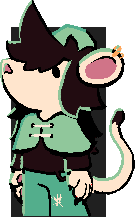

---
---
<script defer src="../js/gallery.js"></script>
<link rel="stylesheet" href="../assets/css/photos.scss" />
<link
    href="https://fonts.googleapis.com/css2?family=Honk&family=Paytone+One&family=Rubik+Glitch+Pop&display=swap"
    rel="stylesheet"
  />
  <link
    href="https://fonts.googleapis.com/css2?family=Josefin+Sans:ital,wght@0,100..700;1,100..700&display=swap"
    rel="stylesheet"
  />

<style>

	:root {
	  	--green: #28c074;
	  	--red: #ff4062;
	  	--black: #202020;
	  	--white: #ffffff;
	  	--gray: #7a7a7a;
	  	--lightbox-background-color: rgba(0, 2, 7, 0.9);
	}
	body {
	    padding:0;
	    margin:0;
    }
    h1{
    border-radius: 3px;
		font-family: "Josefin Sans", sans-serif;
		font-size: 70px;
		height: 90px;
		width:  412px;
		margin-bottom: 10px;
		text-align: center;
		line-height: 160%;
		vertical-align: middle;
		margin-top: 10px;
		color: var(--white);
		background-color: var(--black);
	}
table {
  table-layout: fixed;
  width: 100%;
border-spacing: 3px;
  
}
	
	td:nth-child(1) {
  	padding: 13px;
color: var(--black);
  	border-radius: 2px;
  	background-color: #dddddd;
  	width:30%;
	}
	td:nth-child(2) {
  	padding: 13px;
  	width: 70%;
  	border-radius: 2px;
  	color: var(--black);
  	background-color: #dddddd;
	}
th,
td {

  
}
	h2{
		border-radius: 3px;
		display: inline-block;
		font-family: "Josefin Sans", sans-serif;
		font-size: 30px;
		height: 47px;
		width:  30%;
		margin-bottom: 10px;
		margin-right: 9px;
		text-align: center;
		line-height: 160%;
		vertical-align: middle;
		margin-top: 10px;
		color: var(--white);
		background-color: var(--black);
	}
	h3{
		border-radius: 3px;
		font-family: "Josefin Sans", sans-serif;
		font-size: 50px;
		height: 80px;
		width:  100%;
		margin-bottom: 10px;
		text-align: center;
		line-height: 160%;
		vertical-align: middle;
		margin-top: 10px;
		color: var(--white);
		background-color: var(--black);
	}

	 /* unvisited link */
	a:link {
		color: var(--green);
	}

	/* visited link */
	a:visited {
	  	color: var(--green);
	}

	/* mouse over link */
	a:hover {
	  	color: var(--white);
	}

	/* selected link */
	a:active {
	  	color: blue;
	} 


	.catchphrase{
		border-radius: 3px;
		display: inline-block;
		font-family: "Josefin Sans", sans-serif;
		font-size: 20px;
		text-align: center;
		line-height: 110%;

		width:  200px;
		height: auto;
		
		padding-top: 10px;
		padding-bottom: 10px;

		margin-right: 8px;
		margin-top: 2px;

		vertical-align: middle;
		
		color: var(--white);
		background-color: var(--black);
	}
	.latest{
		border-radius: 3px;
		display: inline-block;
		font-family: "Josefin Sans", sans-serif;
		font-size: 20px;
		text-align: center;
		line-height: 110%;

		width:  200px;
		height: auto;
		
		padding-top: 21px;
		padding-bottom: 21px;

		margin-right: 8px;
		margin-top: 2px;

		vertical-align: middle;
		
		color: var(--white);
		background-color: var(--black);
	}
	.arinPortrait{ 
		position: absolute;
		transform: scale(0.05001);
		top: -2765px; left: -1456px;
	}

	.sidebar{
		font-size: 18px;
		font-family: "Josefin Sans", sans-serif;
		line-height: 25px;

		width: 250px;
		height: 100%;
		padding: 16px;
		top: 0;
		left: 0;
		color: #f4f4f4;
		background-color: #181818;
		overflow-x: hidden;

		display: inline-block;
		position: fixed;
	}

	.mainText{
		font-family: "Josefin Sans", sans-serif;
		width: 550px;
		padding: 12px;
		display: inline-block;
		position: absolute;
		top: 0;
		left: 294px;
		min-height: calc(100% - 32px);
	}

	details > summary {
	  	margin-bottom: 0px;
	  	margin-left: 18px;
	  	font-size: 18px;
	  	line-height: 25px;
		list-style-type: '+ ';

	  	cursor: pointer;
	}

	details > summary:hover {
		
	  	cursor: pointer;
	}

	details > p {
	
	    padding: 0px;
	}
	details[open] > summary {

		list-style-type: '+ ';

	    margin-bottom: -16px;

	}

	.fakeLink{
		color:var(--green);
		text-decoration: underline;
	}

</style>

{% include sidebar.html %}

	<div class = "mainText">

		{{content}}	

	</div>


<div id="lightbox">
    
</div>